基于ubuntu和docker的深度学习环境配置
基于ubuntu和docker的深度学习环境配置Ubuntu环境配置制作启动盘显卡驱动安装本地深度学习环境安装Anaconda创建虚拟环境安装pytorch安装tensorflow远程深度学习环境安装环境安装docker安装docker-nvidia安装deepo配置启动jupyter容器启动jupyter远程使用教程docker简单使用docker与nvidia-docker设置资源大小内存CPUGPU
Ubuntu环境配置
制作启动盘
需要准备的两个东西，u盘和一个ubuntu系统，系统自己找，u盘自己买
当拥有以上两个东西后，可以使用ventoy制作启动盘
链接：https://www.ventoy.net/cn/index.html
将需要装系统的机子设置为u盘优先启动，插入启动盘即可安装新系统
显卡驱动安装
查询可用的驱动版本
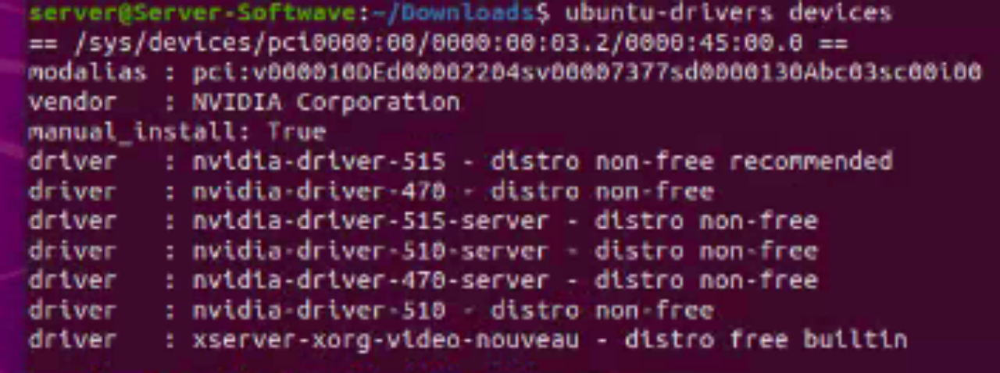
安装所推荐的显卡驱动
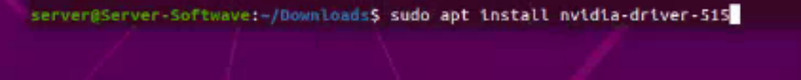
查看显卡是否安装完成
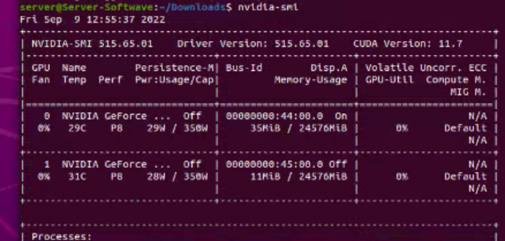
本地深度学习环境
安装Anaconda
Anaconda官方下载：https://www.anaconda.com/products/distribution
执行Anaconda的sh安装包进行安装，如下载的文件为Anaconda3-2022.05-Linux-x86_64.sh
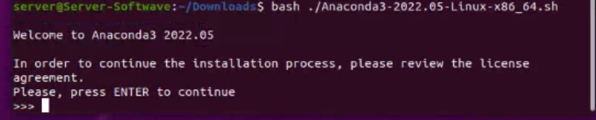
然后一直按enter
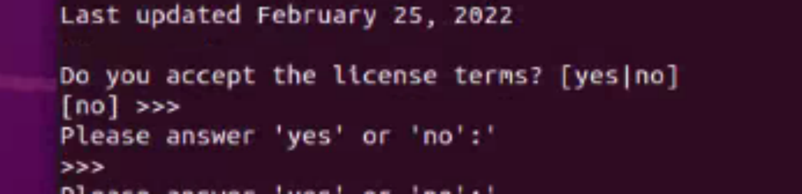
输入yes
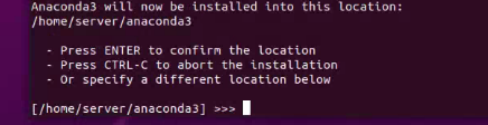
确认安装地址，按enter
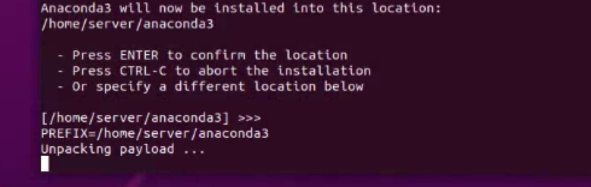
等待
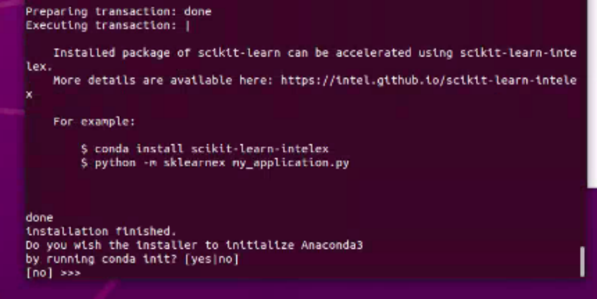
确认初始化，输入yes（如果不输入yes，将要在安装完成后自行进行环境配置）
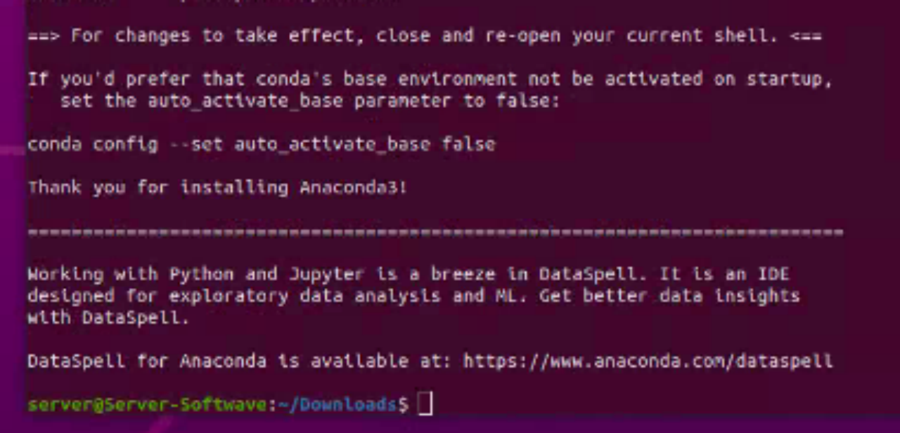
安装完成
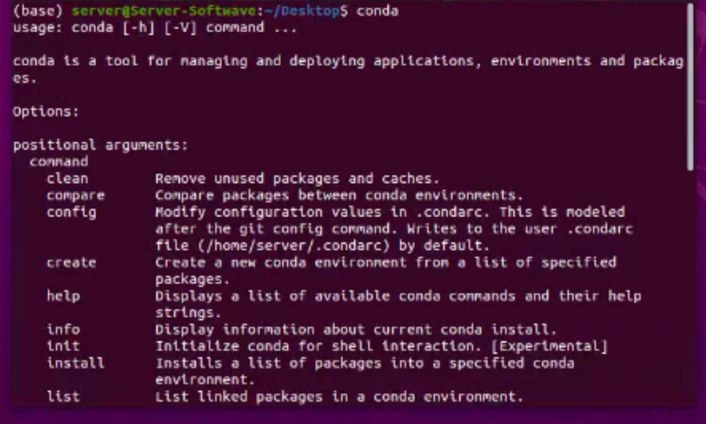
验证安装成功
创建虚拟环境
命令：conda create -n test python=3.8
解释：创建一个叫“test”的虚拟环境，并且环境版本为python3.8
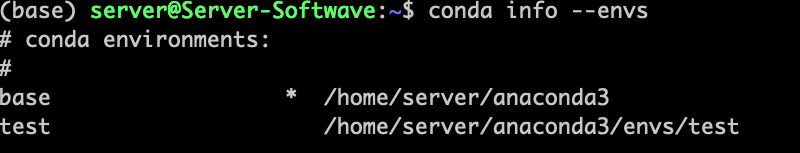
命令：conda active test（进入环境test）
命令：conda deactive（退出环境）
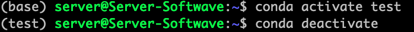
安装pytorch
进入pytorch官方：https://pytorch.org/，选择符合自己的版本，复制命令去安装就行了
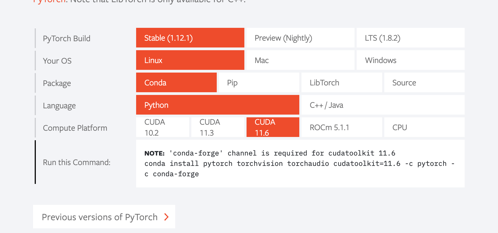
安装完可以进入python环境内，查看是否成功和支持gpu
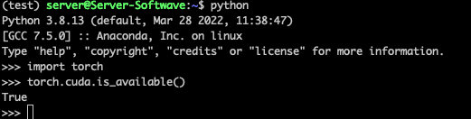
安装tensorflow
命令：conda install tensorflow-gpu
解释：只要转了显卡驱动就行了，会自动帮忙安装cudnn和cudatoolkit
安装完可以进入python环境内，查看是否成功和支持gpu

远程深度学习环境
安装环境
安装docker
参考官网文档 https://docs.docker.com/engine/install/ubuntu/
安装docker-nvidia
参考官方文档 https://docs.nvidia.com/datacenter/cloud-native/container-toolkit/install-guide.html
安装deepo
参考官方文档 https://hub.docker.com/r/ufoym/deepo
由于个人的工作和科研，目前主要会使用jupyter，因此下载了带jupyter版本的容器
配置
启动jupyter容器
命令： sudo nvidia-docker run -it -p 7777:8888 --ipc=host -v /home/server/docker/test:/test ufoym/deepo:all-jupyter 解释： nvidia-docker执行run启动容器，-it为直接进入交互，-p 7777:8888为把主机的7777端口映射到容器的8888端口，-ipc=host为让容器与主机共享内存，-v /home/server/docker/test:/test为将主机上的/home/server/docker/test挂载在容器中并将它命名为/test，实现主机和容器的文件夹共享。ufoym/deepo:all-jupyter为容器的名字，也可以使用它的ID。
结果：
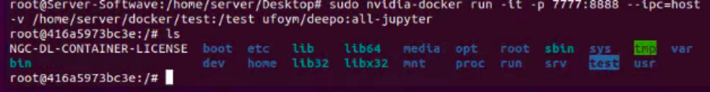
启动jupyter远程
命令： jupyter notebook --no-browser --ip=0.0.0.0 --allow-root --NotebookApp.token= --notebook=’/test’ --port=8888 解释： --no-browser为不打开浏览器进行启动，--ip为指定容器的ip， --allow--root为允许root模式运行，--NotebookApp.token为指定jupyter登陆密码（可以为空），--notebook-dir=’/test’为指定jupyter的根目录为/test
结果：
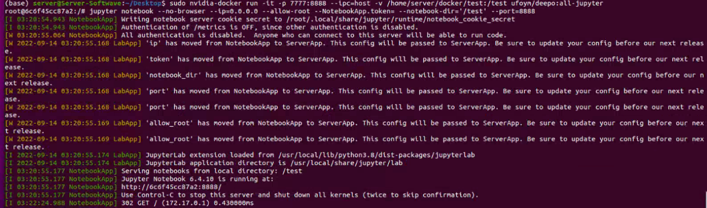
注意，黄色部分为警告（即执行了但是可能未来有问题）
解决方案可参考： https://jupyter-server.readthedocs.io/en/latest/operators/migrate-from-nbserver.html
浏览器使用jupyter服务
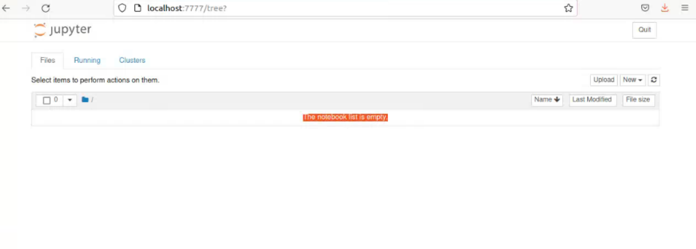
使用教程
docker简单使用
首先是一些查看镜像（image）和容器（container）的命令： 列出本机的所有 image 文件：docker image ls 删除 image 文件：docker image rm [imageName] 列出本机正在运行的容器：docker container ls -l 列出本机所有容器，包括终止运行的容器：docker container ls -l --all 删除容器文件：docker container rm [containerID]
查看容器状态：docker status 导出容器：docker export [OPTIONS] CONTAINER 导入容器：docker import [OPTIONS] file|URL|- [REPOSITORY[:TAG]]
进入正在运行的容器：docker attach 容器ID
退出容器但不关闭：docker exec -it 容器ID /bin/bash
docker run 参数介绍：
--rm, 在容器退出时就能够自动清理容器内部的文件系统 --i, 打开STDIN，用于控制台交互 --t, 分配tty设备，可以支持终端登陆，默认为false --d, 指定容器运行于前台还是后台，默认为false -u, --user="" 指定容器的用户 -a, --attach=[] 登录容器（必须是以docker run -d启动的容器） -w, --workdir="" 指定容器的工作目录 -c, --cpu-shares=0 设置容器CPU权重，在CPU共享场景使用 -e, --env=[] 指定环境变量，容器中可以使用该环境变量 -m, --memory="" 指定容器的内存上限 -P, --publish-all=false 指定容器暴露的端口 -p, --publish=[] 指定容器暴露的端口 -h, --hostname="" 指定容器的主机名 -v, --volume=[] 给容器挂载存储卷，挂载到容器的某个目录 --volumes-from=[] 给容器挂载其他容器上的卷，挂载到容器的某个目录 --cap-add=[] 添加权限，权限清单详见：http://linux.die.net/man/7/capabilities --cap-drop=[] 删除权限，权限清单详见：http://linux.die.net/man/7/capabilities --cidfile="" 运行容器后，在指定文件中写入容器PID值，一种典型的监控系统用法 --cpuset="" 设置容器可以使用哪些CPU，此参数可以用来容器独占CPU --device=[] 添加主机设备给容器，相当于设备直通 --dns=[] 指定容器的dns服务器 --dns-search=[] 指定容器的dns搜索域名，写入到容器的/etc/resolv.conf文件 --entrypoint="" 覆盖image的入口点 --env-file=[] 指定环境变量文件，文件格式为每行一个环境变量 --expose=[] 指定容器暴露的端口，即修改镜像的暴露端口 --link=[] 指定容器间的关联，使用其他容器的IP、env等信息 --lxc-conf=[] 指定容器的配置文件，只有在指定--exec-driver=lxc时使用 --name="" 指定容器名字，后续可以通过名字进行容器管理，links特性需要使用名字 --net="bridge" 容器网络设置: bridge 使用docker daemon指定的网桥 host //容器使用主机的网络 container:NAME_or_ID >//使用其他容器的网路，共享IP和PORT等网络资源 none 容器使用自己的网络（类似--net=bridge），但是不进行配置 --privileged=false 指定容器是否为特权容器，特权容器拥有所有的capabilities --restart="no" 指定容器停止后的重启策略: no：容器退出时不重启 on-failure：容器故障退出（返回值非零）时重启 always：容器退出时总是重启 --rm=false 指定容器停止后自动删除容器(不支持以docker run -d启动的容器) --sig-proxy=true 设置由代理接受并处理信号，但是SIGCHLD、SIGSTOP和SIGKILL不能被代理 具体的操作可以参考文档： [1][https://www.runoob.com/docker/docker-container-usage.html](https://www.runoob.com/docker/docker-container-usage.html) [2][https://zhuanlan.zhihu.com/p/64493662](https://zhuanlan.zhihu.com/p/64493662)
docker与nvidia-docker设置资源大小
内存
参数：—memory 或者 -m 参数设置内存限制，参数后面跟一个数字， 单位可以是b、k、m或者g，最小值是4m
例子：docker run -m 512m nginx
CPU
参数：—cpus设置算力核数，参数后面跟一个数字；—cpu-shares设置CPU分配的优先级，更高的数值优先级更高
例子：docker run —cpus=2 —cpu-shares=2000 nginx
GPU
GPU隔离：
意思是只将指定的GPU映射到容器里面
参数：-e NVIDIA_VISIBLE_DEVICES设置GPU，参数后面跟指定的gpu编号（使用nvidia-smi在bash里面查看编号），-e NVIDIA_VISIBLE_DEVICES=all表示使用全部GPU
指定GPU：
参数：—gpus设置gpu设备个数，参数后面跟指定的gpu编号（使用nvidia-smi在bash里面查看编号），—gpus all表示使用全部GPU
命令：docker run -it —gpus=’”device=1,2”’ id